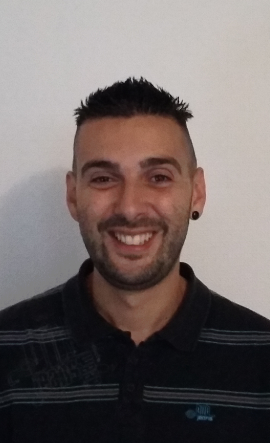
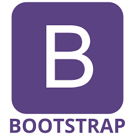
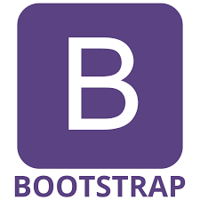

CASTELL Dimitri
PROFIL
31 ans
Développeur web junior motivé
CONTACT
06.87.88.57.50
COMPETENCES
en cours d'acquisition


-

 



DEVELOPPEUR WEB JUNIOR
Compétences
- Savoir s'intégrer à des équipes de travail
- Pair programming
- Veille technologique
- Méthode agile
- Saisir, mettre à jour tout type de données
- Tâche comptable de base
Projet réalisé pendant ma formation
- Site pour une journée dédiée aux recyclages des poduits électoniques pour l'association AG2I à Auch Voici le lien vers le site
Formations
- 2017: Formation de développeur web avec Simplon
- 2015: Formation de réorientation professionnelle (POI avec l'INSTEP)
- 2007: 1ere année DUT GEA
- 2006: Bac STT Comptabilité Gestion
Expériences professionelles
- 2016: Employé de conditionnement et d'emballage aux Délices d'Aliénor à Gimont
- 2016: Ouvrier horticole chez Mr Truillet à Lombez
- 2015: Ouvrier horticole chez Mr Carté à Fleurance
- 2015 Hôte d'accueil office de tourisme à Mauvezin
- 2014: Aide maraicher à Bars
- 2013: Manutentionnaire chez Delpeyrat à Vic Fezensac
- 2013 et 2008: Manutentionnaire chez Sweet Corn à Escorneboeuf
- 2012 et 2011: Préparateur de commandes chez Villeneuve à Saint Arroman
- 2011 et 2010: Préparateur de commandes au Jambon d'Auch à Gimont
- 2009: Manutentionnaire à la Comtesse du Barry à Gimont
Loisirs
- Football
- Les sports collectifs
- Les Jeux-Vidéos
- Musique